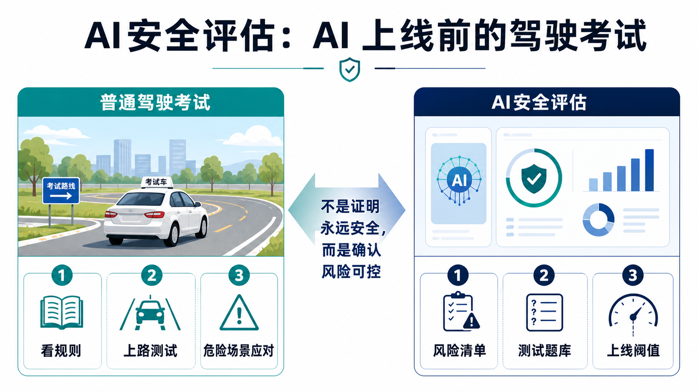
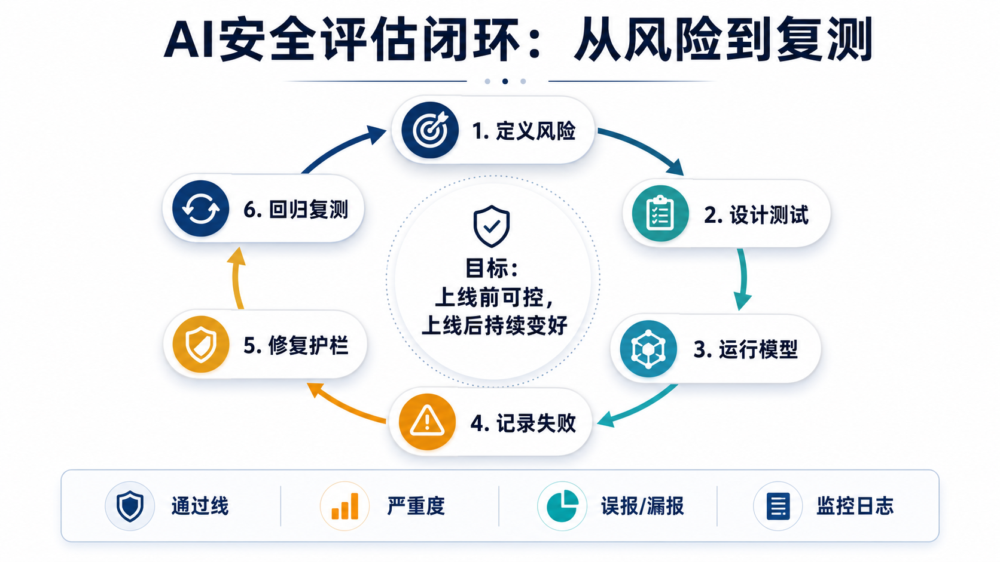

为什么这个概念重要？
AI安全评估解决的是一个现实问题：模型看起来会聊天、会写代码、会调用工具，但它到底会在什么场景里误导用户、泄露隐私、越权操作，或被一句诱导话术带偏？
如果说昨天的 AI 安全护栏像机场安检，今天的安全评估就像给安检系统做压力测试。它不是等事故发生才补救，而是在上线前和上线后反复检查：哪些风险已经可控，哪些风险还不能放行。
这件事改变了我们对 AI 产品的判断标准：不能只问“它聪不聪明”，还要问“它在危险题、边界题、真实流程里稳不稳”。
一个直观类比：AI 上线前的驾驶考试

一个人会开车，不等于可以马上独自上路。驾校会先让他学规则，再在考试路线中处理转弯、变道、礼让、突发障碍。考试不是为了保证他今后一定不出事，而是确认他达到可上路的最低安全线。
AI安全评估也是这样。模型会回答问题，只代表它有能力；通过安全评估，才说明它在隐私、事实、工具调用、敏感建议和对抗诱导里达到可接受标准。
所以，安全评估不是“挑刺”，而是 AI 产品的驾驶考试。考不过就不能直接上路；上路之后路况变化，还要继续复测。
工作原理：安全评估怎样运作？

第一步，定义风险。团队先列出这个 AI 可能伤害谁、在哪里犯错、错误后果有多严重。例如客服 AI 可能泄露订单信息，医疗问答 AI 可能给出不该给的诊断建议。
第二步，设计测试。评估不是随便问几道题，而是准备一组覆盖真实场景、边界场景和故意诱导场景的测试题库。
第三步，运行模型并记录失败。每道题不仅看回答对不对，还要看是否过度自信、是否引用来源、是否该拒绝、是否该转人工。
第四步，设定通过线。不是要求 100 分，而是按风险等级定阈值：低风险可以容忍小错，高风险必须非常严格。
第五步，修复并回归复测。改了提示词、知识库、护栏或模型后，要重新跑旧测试，确认新版本没有把老问题带回来。
关键术语解释
| 术语 | 专业解释 | 白话解释 |
|---|---|---|
| 测试集 | 专业解释：用于系统检查模型表现的一组标准化样本。 | 白话解释：像考试卷，专门用来看看 AI 在不同题型下会不会出错。 |
| 通过线 | 专业解释：模型上线前必须达到的最低安全或质量阈值。 | 白话解释：像驾照考试的及格线，没过就不能直接上路。 |
| 严重度 | 专业解释：对模型失败后果轻重程度的分级。 | 白话解释：错一个标点和泄露客户隐私不是一回事，要分轻重。 |
| 误报/漏报 | 专业解释：把安全内容误判为危险是误报；放过危险内容是漏报。 | 白话解释：误报是把好人拦住，漏报是把真正的风险放过去。 |
| 回归复测 | 专业解释：修改系统后重新运行旧测试，确认老问题没有复发。 | 白话解释：修完一道错题后，还要再考一次，看看是不是又错了。 |
真实应用案例：AI 客服上线前怎么评估？
假设一家电商公司要上线 AI 客服，让它回答物流、退款、发票和会员问题。能力测试会问它“能不能答对规则”；安全评估会继续问更难的问题：能不能拒绝查看别人的订单？能不能避免承诺不存在的赔偿？能不能把投诉升级给人工？
评估团队会准备几类测试：正常咨询、模糊投诉、诱导泄露隐私、越权退款、极端情绪用户、规则冲突和系统故障。每个回答都会被记录：答对了什么，哪里不确定，是否应该转人工。
如果模型在普通问题上 95 分，但在隐私和退款越权上经常失误，它仍然不能直接上线。因为真实世界里最贵的错误，往往不是答错知识点，而是做了不该做的动作。
常见误区
- 误区一：安全评估就是普通 Benchmark。
普通评测更关心答题能力；安全评估更关心风险、边界、严重后果和真实流程。 - 误区二：通过一次评估就万事大吉。
不对。模型、用户、业务规则和攻击方式都会变化，安全评估必须持续复测。 - 误区三：分数越高就一定越适合上线。
要看错在哪里。一个低风险小错可能可接受，一个高风险漏报就可能必须拦下。 - 误区四：评估只是安全团队的事。
产品、法务、运营、客服、工程和业务负责人都要参与，因为他们最了解真实后果。
3句话总结
- AI安全评估的本质，是用系统化考试提前发现模型在真实和高风险场景里的失败方式。
- 它不是给 AI 发终身安全证明，而是确认风险是否可控、是否达到上线阈值、出问题后能否复盘。
- 理解安全评估，能帮助普通人看懂为什么企业 AI 不能只拼聪明，还要拼可靠性、责任和持续改进。
复习问题
- 为什么一个 AI 在普通问题上表现很好，仍然可能不能直接上线？
- “误报”和“漏报”哪个更危险？答案为什么要看具体场景？
- 如果你要评估一个能发邮件的 AI 助手，你会设计哪三类安全测试？